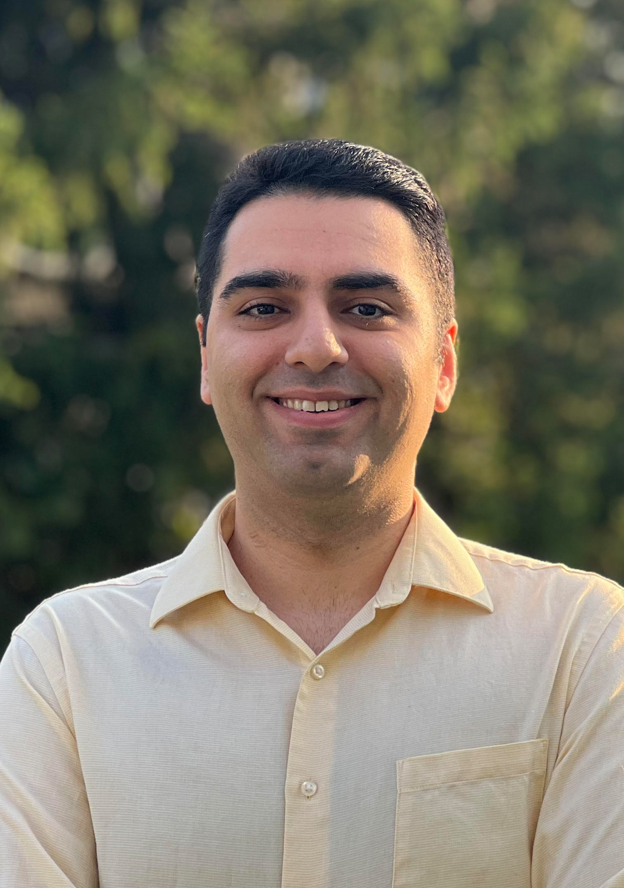

Research Interests
- Computational Materials Science
- Materials Design
- Mechanics of Materials
- Machine Learning
- Multi-scale Simulations
About Me
|  |
Ali K. Shargh
Latrobe Hall 229 |
I am currently a Postdoctoral Research Fellow at Johns Hopkins University with Mechanical and Material Engineering training. I conduct research on closed-loop automated laboratories to accelerate the discovery of refractory multi-principal element alloys (RMPEAs) for extreme environments. In parallel, I study the thermo-mechanical response of ice and ice-nucleation mechanisms to inform strategies for mitigating polar ice-sheet loss. In 2025, I was selected as the Rising Stars in Mechanical and Materials Engineering.
I received my Ph.D. in Mechanical Engineering (2023) from the University of Rochester, New York, USA, and my M.S. (2017) and B.S. (2014) in Mechanical Engineering from Sharif University of Technology and K. N. Toosi University of Technology in Iran, respectively.